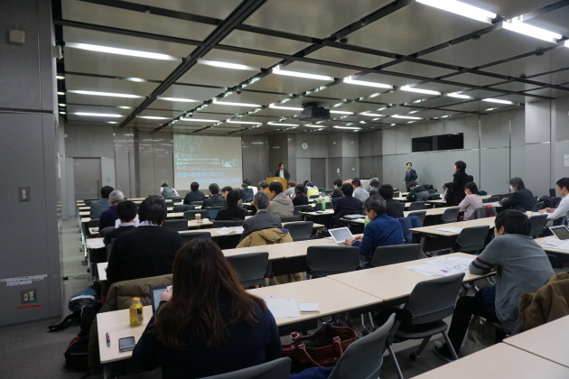
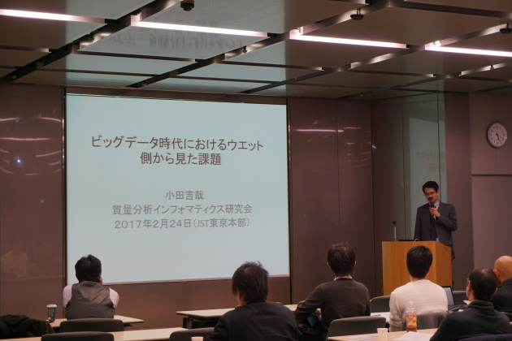
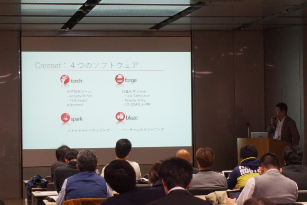
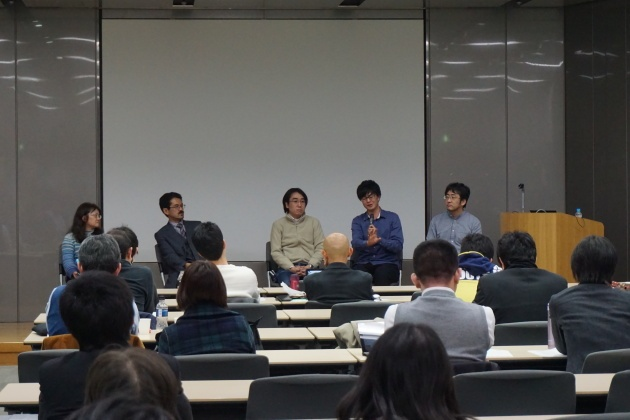

開催報告
諸般の事情でたいへん遅くなってしまいましたが、第2回ワークショップの開催報告を公開します。
第2回ワークショップは、予定通り2017年2月24日（金）の午後2時から、JST東京本部大会議室にて開催されました。
告知＆申し込みのwebページ及び当日の会場で明示したとおり、今回のワークショップは日本バイオインフォマティクス学会(JSBi)に加えて、株式会社レベルファイブから協賛を頂いて実行することができました。

参加者について：
参加者数は以下の表の通りです：
| 事前登録人数 | 比率 | 当日参加人数 | 出席率 | |
|---|---|---|---|---|
| 事前参加登録者 | 64 | 55 | 85.9% | |
| うち情報系研究者と回答 | 17 | 26.6% | 13 | |
| うちJSBi会員 | 10 | 15.6% | 9 | |
| 講演者 | 5 | 5 | ||
| うち情報系研究者 | 3 | 60% | 3 | |
| うちJSBi会員 | 1 | 20% | 1 | |
| 主催者 | 3 | 3 | ||
| うち情報系研究者 | 3 | 100% | 3 | |
| うちJSBi会員 | 2 | 66.7% | 2 | |
| 当日参加者 | - | ? | ||
| 計 | 72 | 63+ | 87.5+% |
なおこれ以外に当日参加者が若干名いらっしゃるようですが、記帳頂いていないようで確認ができません。参加人数の確認などは予算の継続のためにも必要なことですので、今後はご記帳をお願いします。
いずれにせよ、ご参加頂いた人数は前回第1回公開ワークショップのときの参加者数を5～10名程度上回ることになったようです。また前回同様、「JSBi会員で、この分野に関心のある人は（比較的）少ない」という結論が得られそうです。
特筆すべきは、「前回に引き続いてご参加頂いた方の人数」が28名に達した（事前登録は30名、2名が当日欠席）ことです。まだ実施回数が2回なので結論に飛びつくべきではありませんが、この（30人）程度の人数に今後も繰り返し定常的に参加頂けるようであれば、この分野が「研究分野として確立した」と言っても差し支えないと考えます。
また今回のワークショップ開催にあたっては、（第1回に引き続き）以下の学会･団体のweb・SNS・メーリングリストなどに広告を掲載していただきました：
- 日本バイオインフォマティクス学会(JSBi)
- 日本質量分析学会(MSSJ)
- 日本プロテオーム学会(JPrOS/JHUPO)
- 情報処理学会(SIG-BIO)
- 日本分子生物学会
- 日本生化学会
- 糖鎖インフォマティクス若手の会
- サイエンスポータル
- 文部科学省・ライフサイエンスの広場
- バイオインダストリー協会
- Mass++ユーザー会
もし「他にこのような団体に広告を掲載した方がいい」といったご意見などがありましたら、本会世話人 (ms-bioinfo-admin@googlegroups.com) まで、もしくは研究会メーリングリストまでお寄せください。
講演と総合討論について：
前回に引き続いて今回も、講師の先生方のご講演は全て、「講演時間は40分程度」ということのみを指定した上で、「内容･構成は100％、講演者にお任せする」という形式で自由にご講演いただきました（タイムキーパーのベルなどは、意識的に導入しておりません）。結果的に、非常に充実して興味深い内容が満載になったかと思いますが、ワークショップが午後1時開始ではなく午後2時開始だった（会場の都合）こともあって、ディスカッションの時間などは少々窮屈になってしまったかと思います。
またディスカッションでは、「実際に議論の題材となることこそが、その時点で研究者に関心のあることである」ということで、世話人は議論の流れには割って入りませんでしたが、その直前の小田先生のご講演に対応した内容の討論が進むことを期待されていた方も多かったようで、そのことについてのコメントも頂いています。今後はもう少しだけ、世話人が議論の方向を誘導することも検討してみてもいいかもしれません。
さて今回のワークショップでは、初めての試みとして「ご講演の撮影」を行っています。撮影されたご講演は、講演者の先生方にチェックしていただき、未発表の内容など公開に適さない内容が含まれている場合には、その部分を削除・マスクなど処理します。その上で問題がないという判断が得られたものを、ライフサイエンス統合データベースセンターの『TogoTV （トーゴーティーヴィー、統合TV）』のコンテンツの一つとして、YouTubeで公開しています（当然、視聴は無償です）。
このような撮影は、ワークショップの当初の計画にはなく、後から持ち上がったため、講演者の先生方にはご迷惑をお掛けしました（この場を借りてお詫びします）。この「TogoTVでの公開」は、「講演会の模様をwebで中継して欲しい」というご要望に少し異なった形で（未発表内容を不特定多数に公開したくない、という講演者側の条件にも対応する形で）応えた、とお考えください（従って、リアルタイムでの中継は今後も行いません）。
今後の研究会などについて：
なお、（時間の都合で）ワークショップでは最後の挨拶ができませんでしたので、この場を借りて幾つかコメントを述べさせて頂きます。
「インフォマティクス」について
「インフォマティクス」という言葉は、人によって異なった意味合いで使われることが多いようです。現在のコンセンサスは、「“高度”な情報処理手法を用いた、実験データの解析」「そのためのプログラム（或いはデータベース）作成」ということでしょうか。
しかし、これらは確かにインフォマティクスですが、「これらがインフォマティクスの全て」というわけではない、ということは強調しておきたいと思います。
バイオインフォマティクスは、ゲノムの塩基配列が次々に決定されていく中で、「そこから遺伝子を予測する」「遺伝子の機能を予測する」といった「ゲノム決定のために必須の処理」を遂行するために生み出されてきたもので、またそれをそのまま利用してゲノム研究の方法論が確立してきました。そしてこの「ゲノム決定のため」に必要とされたバイオインフォマティクスの手法は、それまでに積み上げられてきた、遺伝子配列の関連性・類似性についての基礎研究から生み出されました。
この基礎研究とは、基本的には「分子進化学を指向した理論生物学研究」でした。これらの理論生物学研究は、ゲノム計画とはまったく無関係に登場しています。例えば大域的(global)アライメントのNeedleman-Wunschアルゴリズムが登場したのは1970年、局所(local)アライメントのSmith-Watermanアルゴリズムは1981年です。ゲノム計画の影も形もない時代です。
その後、バイオインフォマティクスはそれまで個別の分野だった、分子進化学の一部やタンパク質構造研究など、多くの分野を包含する緩やかな分野名として拡大していきますが、その間常に“研究の旗振り手”となってきたのは、やはりこのような「理論生物学指向」の基礎研究でした。
このように考えると、「質量分析のデータ解析」という実用的な問題へ対処するときにも、“理論的な化学／生物学”的な基礎研究は無視するべきではないと考えます。分析化学／理論生物学的研究は、（バイオ）インフォマティクス研究のいわば“種籾”です。それ自体は食糧にならなくとも、明日の食糧を生み出すためには不可欠な存在です。
このような観点から、本研究会の対象にする“インフォマティクス”も、「実用的」なものに限定することなく、しかし実用性を捨てることもなく、広い観点から見ていきたい、と考えています。
「質量分析」の語が意図する範囲について
質量分析は広い範囲で応用されているため、物理化学や材料科学から生命科学まで、広い範囲で研究が進んでいます。これらを全てカバーするのは本来、質量分析学会の役割であるので、全ての内容をこの研究会で網羅することは意図しておりません。このために現時点では、「オミクス科学への応用」を念頭に置いたテーマのご講演をお願いしています。
しかし「異なった（しかし隣接する）分野の研究について発表を聞くことは、自分の研究分野にとっても有益である」というのが本研究会の別の意図でもあり、この視点からは、オミクス研究以外の質量分析分野でのインフォマティクス研究は、オミクス分野の研究者にとっても、或いは情報学分野の研究者にとっても有益かもしれません。
このような考えから、本研究会で対象にする「質量分析」の範囲は、厳格にオミクス分野に限定するのではなく、「知的刺激を受ける」分野の内容を広くカバーしていきたいと考えています。
ハッカソンについて
第2回ワークショップ講演コンテンツ in 統合TV：
上にも記しましたように、第2回ワークショップで頂いた招待講演は統合TVで公開されています。以下がそのリンクです。
なお、小田先生のご講演ですが、一般公開を想定せずに講演内容を組み立てられたとのことですので、公開を見送らせて頂きます。
- 津川 裕司 先生 質量分析を用いたメタボロミクス研究に資する情報処理および化合物同定のための技術開発
- 山本 博之 先生 CE-MSメタボロミクスにおけるバイオ/ケモ/質量分析インフォマティクス
- 早川 英介 先生 MS/MSスペクトルクラスタリングの化合物構造推定への応用
- 箕輪 真理 先生 オミクス・データと個人情報
世話人： 吉沢 明康 （京都大学大学院薬学研究科）
河野 信 （ライフサイエンス統合データベースセンター）
守屋 勇樹 （ライフサイエンス統合データベースセンター）
Page Last Updated: Aug. 5, 2017